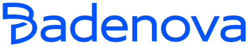
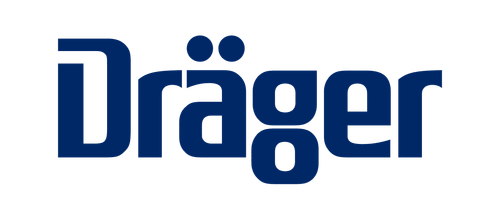
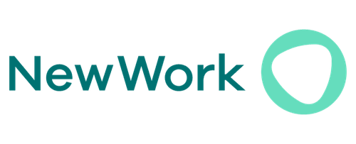
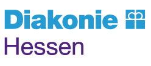
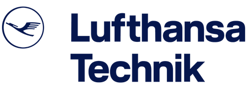
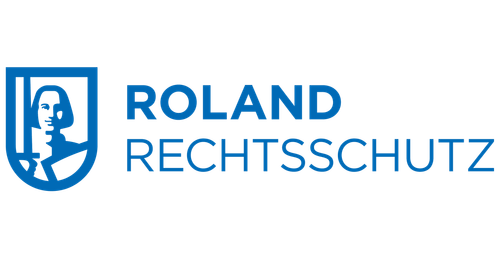
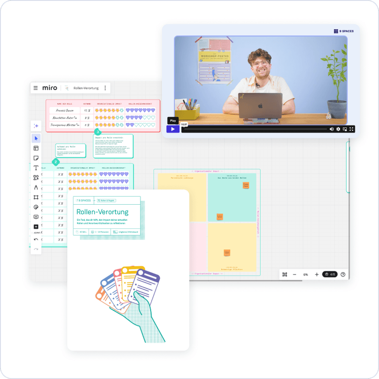
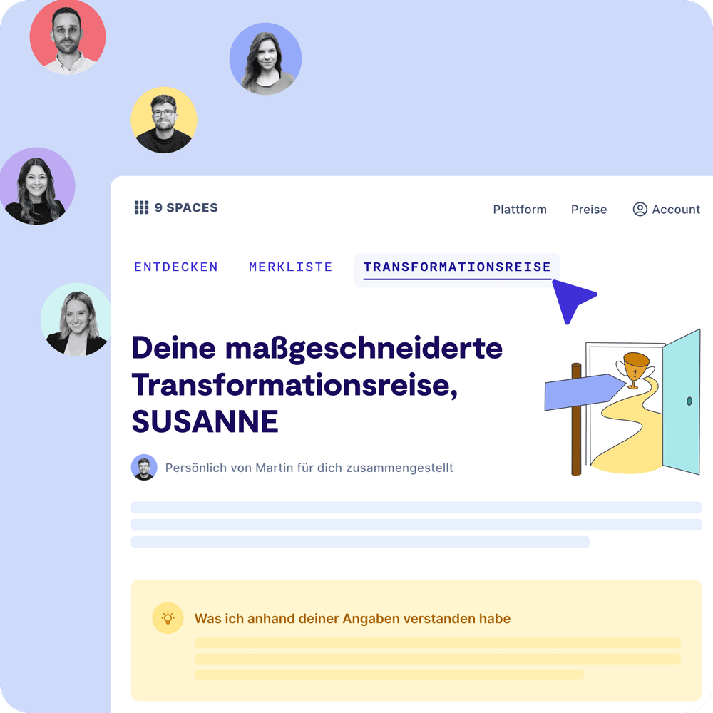
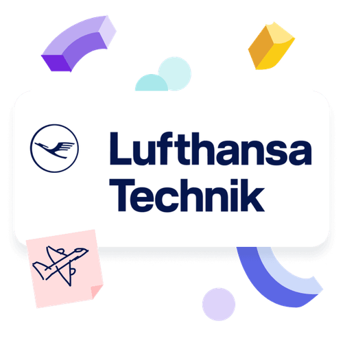

Business
ab 5 Nutzer*innen
Zugang für ausgewählte Nutzer*innen
Wir sind der Meinung: In herausfordernden Zeiten braucht es starke Teams und effiziente Abläufe. Mit den 9 Spaces Workshops macht ihr eure Organisation zukunftssicher.
Hier lernt ihr, wie ihr mit 9 Spaces eure Arbeitswelt in der Automobilindustrie neu gestaltet.







Auf 9 Spaces findet ihr interaktive Whiteboards, praxiserprobte Methoden, Moderationsleitfäden und Tutorials – für smarte Prozesse, agile Teams und erfolgreiche Transformation.
💡 Wirtschaftliche Unsicherheit & Innovationsdruck
Sinkende Margen, instabile Märkte, geopolitische Spannungen und der Druck zur Transformation – sei es durch E-Mobilität, autonomes Fahren oder Digitalisierung – belasten die Branche massiv. Gerade jetzt braucht es Klarheit und konkrete Methoden. 9 Spaces hilft euch, eure Organisation auf Kurs zu halten – mit Methoden wie dem Schlagzeilen aus der Zukunft-Workshop zur gemeinsamen Zielklärung und Visionserarbeitung. So könnt ihr Veränderungen strukturiert und proaktiv angehen, statt in Reaktion zu verharren.
🤝 Silodenken & fehlende Zusammenarbeit entlang der Lieferkette
OEMs, Zulieferer und Technologiepartner müssen enger verzahnt arbeiten. Oft scheitert es jedoch an mangelnder Abstimmung oder veralteten Strukturen. 9 Spaces unterstützt euch dabei, Silos aufzubrechen: Mit gemeinsamen Workshops und Tools zur Rollenklärung wie dem Rollen-Bild mit integrierten Whiteboards und klaren Schritt-für-Schritt-Anleitungen verbessert ihr eure Zusammenarbeit entlang der gesamten Wertschöpfungskette.
👥 Fachkräftemangel & kultureller Wandel in der Organisation
Rund 770.000 Menschen arbeiten in Deutschland in der Automobilindustrie – doch der Nachwuchs fehlt, und neue Technologien verändern die Jobanforderungen. Mit den 9 Spaces Workshops gestaltet ihr aktiv den Kulturwandel: Tools wie der Stärken-Finder fördern den Austausch zwischen Generationen, machen Kompetenzen sichtbar und verbessern Teamgefühl und Identifikation. Unserer Meinung nach ein echter Hebel, um Menschen zu halten und zu entwickeln.
Quellen: Simon-Kucher, KPMG, Institut der deutschen Wirtschaft Köln e. V., Statista I, Statista II
Aufgeteilt in drei Module helfen sie euch, Innovationen voranzutreiben, Prozesse zu optimieren und die Zusammenarbeit in eurem Umfeld aktiv zu gestalten.

Große Veränderungen können schnell überwältigend wirken. Mit der maßgeschneiderten Transformationsreise bekommt ihr ein Planungs-Tool für die Transfromation, individuell auf eure Herausforderungen abgestimmt.
Zugang für ausgewählte Nutzer*innen

Viele der 4.500 Mitarbeiterinnen und Mitarbeiter aus dem Segment Aircraft Component Services von Lufthansa Technik stecken in Arbeitstagen mit Meeting-Endlosschleifen fest. Eine interne Community aus Facilitatoren soll das mithilfe von 9 Spaces ändern – und eine neue Meeting-Kultur etablieren.
Unser Team unterstützt dich gerne dabei, die perfekte Lösung für eure Organisation zu finden.